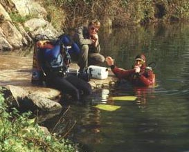

|
|
SCUBA DEVELOPMENT: BSAC AT SALCOMBE - REG VALLINTINE

During the mid 1950s clubs like the London Branch of the British Sub Aqua Club were established using the imported Cousteau Aqualung.London Branch BSAC Mike Wilson, 1955
Expeditions were organised to the sea at places such as Salcombe and Durdle Daw near Swanage. The activity involved lots of lifting, carrying and climbing.
At that time the available thermal protection for sea diving was relatively inadequate. The safety rules were in the process of being established and modern innovations such as the compressed air life jackets were not available. The dives often took place in weedy bays which gave easier access to the water.
Diving officer was the concept of the stand-by diver from helmet diving times. Some divers used primitive dry suits which gave you wheals where the air was squeezed inside when you came out. Others had suits that were vastly inadequate for the freezing waters they were going into. It was a new world explored by amateurs.
SCUBA DEVELOPMENT: GIGLIO, MEDITERRANEAN - REG VALLINTINE
Holidays in the early 1960s
Giglio Mike Busuttili, 1961
took British divers to the Mediterranean and to the Italian Island of Giglio off Tuscany. This island with some 2,000 inhabitants acted as their base.
The uninhabited Island of Giannutri nearby had the remains of a Roman villa which had belonged to a cousin of Nero.
Out to dive off rocky shores in incredibly clear water. Diving took place from an ex-ship’s lifeboat down to depths in the region of 50m. In those days less was known of the dangers of decompression sickness and nitrogen narcosis. Here experienced divers gained their first taste of Mediterranean diving.
Swimming down the anchor line to deep sea bottoms below. The rewards were great on the sand bottoms. These amphoras from 300AD were two handled storage jars, like elegant jerry cans, and formed the largest remains of the ancient wrecks. They were used for transporting wine, oil, water or grain...
SCUBA DEVELOPMENT: MODERN EQUIPMENT - REG VALLINTINE
The divers here are enjoying the Mediterranean climate and spectacular underwater scenery off the coast of Sardinia. Present day scuba equipment includes efficient dry or wetsuits and flotation jackets with which the divers can control their buoyancy. The support this offers both underwater and on the surface while waiting pick-up is a great safety improvement.
To avoid the twin hose arrangement modern demand valves separate the first and second stages, connecting them with a flexible medium pressure hose.
The first stage adjusts the tank pressure of up to 300 bars to an intermediate pressure of 8-10 bars above the surrounding water pressure. In the second stage a diaphragm operated valve supplies air as the diver inhales. The exhaust is at the same level to avoid a pressure difference, which would result in ‘stiff’ breathing or a free-flow.
Sophisticated engineering ensures easy breathing at all flow rates and a fail-safe mode if the valve sticks.
Whilst modern understanding of decompression principles and the use of mixed gasses enables safe diving to considerable depths, this hard won knowledge was first grasped many years ago in the Siebe Gorman test laboratories. Nick Baker recounts the sacrifices which heralded the new era in diving.
|
|